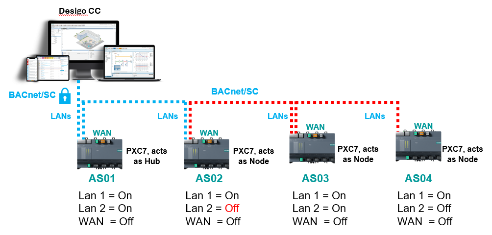

以太网和 USB 端口管理
出于安全原因，必须禁用自动化站上未使用的以太网端口。 DXR2 房间自动化站不支持灵活以太网端口。当前状态显示在 IP 部分的设备详细信息中，例如 PXC7。
Building > Building structure > Details pane > Details pane of the device version ≤ 1.5
Building > Building structure > Details pane > Details pane of the device version ≥ 1.6
Port management with daisy chain connection
使用菊花链布线时，必须注意确保没有关闭仍具有下游设备的端口。通信中断，后续设备的数据无法再传输（红线）。
